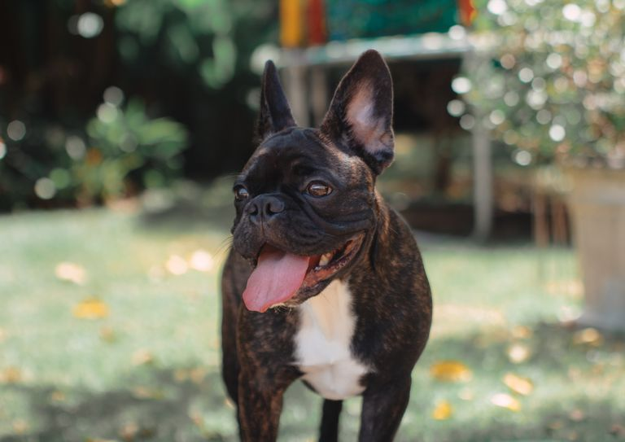
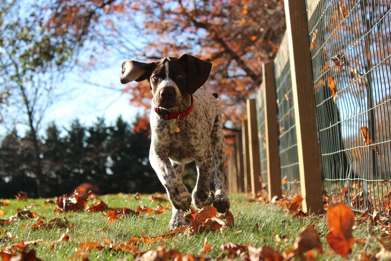

This list is a combination of guard dogs and family dogs.The top 10 dogs are :
Labrador retrievers:-
Labrador Retrievers are known for their friendly and outgoing nature. These playful four-legged friends make great house pets and typically weigh between 55 and 80 pounds. They're perfect for cuddles!
German Shepards :
German Shepherds are known for their confident, smart, and courageous nature. These big dogs can weigh between 50 and 90 pounds. As the AKC writes, they have the "ability to learn commands for many tasks, and the willingness to put their life on the line in defense of loved ones."
Golden Retrievers :
Golden Retrievers are intelligent, friendly, and devoted dogs. Their elegant and rich coat of gold gives the breed its name. These guys never run out of energy.
French bulldogs :

French Bulldogs are adaptable, playful, and smart. This breed is known for its large "bat ears,"and is a smaller version of the Bulldog.
German Shorthaired Pointers:

German Shorthaired Pointers are friendly, smart, and love to please others. These dogs have "friendly eyes" and were built to work long days in the field or at the lake, according to the AKC. They're known for power, speed, agility, and endurance.